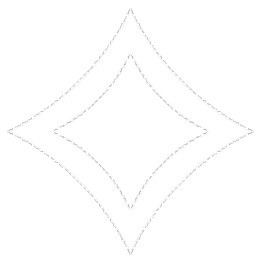
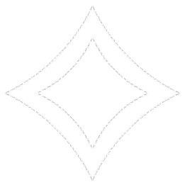

Actualmente en Magic: The Gathering existen más de 21.000 cartas diferentes y entre tanta cantidad de cartas, existen distintos Tipos de las mismas y dentro de cada tipo, subtipos. En este apartado de la web podrás encontrarlos todos.
Las Tierras Básicas, el tipo más común de tierra, otorgan la esencia más pura de la magia que representan, existe una por cada color de la magia elemental: Llanura , Isla
, Isla , Pantano, Montaña, Bosque
, Pantano, Montaña, Bosque y Restos.
y Restos.
Todas las tierras básicas hacen lo mismo dentro del juego: ": Otorga un maná del color que representa"
Como su propio nombre indica, las tierras dobles son tierras que otorgan dos manás diferentes. Existe una por cada combinación de dos posibles (Es decir, 10). Dentro de esta categoría, hay muchos tipos de tierras dobles:
Este tipo de tierras son similares a las tierras básicas, con la diferencia de que estas tienen habilidades especiales al entrar al campo de batalla. Mientras que las tierras simples únicamente nos otorgan un maná del color que representan, estas tierras también lo hacen, pero cada una de ellas hace algo diferente, P.ej.: Existen cartas como la que se muestra que al entrar al campo de batalla, invoca un token de planta 0/1. Otro ejemplo: Mortuary Mire que al entrar devuelve una carta de criatura del cementerio al topside del mazo
Aunque con menos variantes que las tierras dobles, las tierras triples son, lo que su nombre indica, tierras que te dan uno de los
tres colores que representan. Existe una por cada combinacion entre los cinco colores principales (Es decir, 10).
La única variante existente de estas tierras son las Cycling Lands , (Que también existen como tierras simples especiales), en el caso de las tierras triples,
cita lo siguiente: "Cycling (, Discard this card: Draw a card.)"
, (Que también existen como tierras simples especiales), en el caso de las tierras triples,
cita lo siguiente: "Cycling (, Discard this card: Draw a card.)"

En Magic: The Gathering, una criatura es un tipo de carta que representa a un ser animado o ser viviente, que puede ser invocado al campo de batalla y luchar contra las criaturas del oponente o infligir daño directo al oponente.
Las criaturas tienen una serie de estadísticas, como fuerza y resistencia, que indican su capacidad para atacar y defender (Indicadas en la parte inferior derecha (1/1)). También pueden tener habilidades especiales, como la habilidad de volar, la habilidad de crear tokens de criatura, o la habilidad de infligir daño directo al oponente.
Las criaturas son una parte fundamental del juego y son una de las formas más comunes de ganar la partida.

Seguramente ya te hayas percatado a lo largo de la página sobre la parte trasera de las cartas, pero en este caso es diferente.
Este tipo de criaturas cuentan con la capacidad de la transformación, la metamorfosis. Para representar esto, la parte trasera de la carta cambia a su versión transformada. Para poder transformar la carta en cuestion que cuente con esta capacidad, se tendrá que cumplir la condición especificada en la carta.
P.ej.: En la carta tipo criatura transformable
Arcangel Avacyn/Avacyn, la purificadora  se tiene que cumplir la condición de que muera una criatura que no sea un angel y esté bajo tu control.
se tiene que cumplir la condición de que muera una criatura que no sea un angel y esté bajo tu control.
Las criaturas con la habilidad "Level Up". Estas criaturas tienen la capacidad de mejorar a medida que se cumplan ciertas condiciones, como pagar un cierto costo de maná o tener una cierta cantidad de contadores de nivel.
Cuando una criatura con "Level Up" llega al siguiente nivel, su fuerza, resistencia y habilidades pueden mejorar. Estas mejoras pueden incluir cosas como aumentar su fuerza y resistencia, obtener nuevas habilidades o ganar la habilidad de volar.
Cada criatura con "Level Up" tiene varios niveles diferentes que pueden alcanzar, y cada nivel requiere un costo de maná y / o una cantidad de contadores de nivel específicos para ser activado. Algunas de estas criaturas también tienen habilidades adicionales que se activan cuando alcanzan un cierto nivel, lo que las hace aún más poderosas.
Las criaturas con la habilidad "Level Up" pueden ser una herramienta útil para los jugadores de Magic que buscan construir mazos centrados en criaturas y que valoran la capacidad de adaptarse y mejorar a medida que se desarrolla el juego.
Las criaturas con la habilidad "defensor" no pueden atacar, ya que están diseñadas para defender. A menudo tienen una resistencia alta y una fuerza baja, lo que los hace más útiles para bloquear ataques enemigos. Algunas criaturas con defensor también pueden tener otras habilidades útiles para bloquear, como la vigilancia, que les permite bloquear y atacar al mismo tiempo, o la habilidad de alcanzar, que les permite bloquear criaturas con la habilidad de volar.
Wall of Omens , Fog Bank y Steel wall son algunos ejemplos de criaturas con defensor incluyen.
La habilidad de aventura es una habilidad de las cartas de criatura que se introdujo en el set de Magic: The Gathering "Trono de Eldraine". Esta habilidad permite a la carta tener dos efectos diferentes: uno para su parte de criatura y otro para su parte de aventura, que se puede lanzar como un hechizo instantáneo o conjuro.
Cuando se juega una carta con habilidad de aventura, se puede elegir lanzar la parte de criatura o la parte de aventura. Si se lanza la parte de aventura, se exilia la carta y se resuelve su efecto, que puede ser un hechizo de cualquier tipo, incluyendo conjuros, encantamientos y artefactos. Si se lanza la parte de criatura, se juega desde la mano como una criatura normal.
La habilidad de aventura agrega una dimensión adicional a la jugabilidad de Magic, permitiendo a los jugadores elegir el momento adecuado para lanzar cada parte de la carta según la situación del juego. Además, algunas cartas de aventura tienen efectos poderosos que pueden cambiar el rumbo del juego.
La carta que se muestra de ejemplo tiene una aventura tipo conjuro, un ejemplo de criatura con aventura de tipo instantáneo es el Jinete Homicida .
Los artefactos simples son cartas de artefacto que tienen una habilidad o efecto único y sencillo, sin costos de activación ni requisitos adicionales. Suelen ser cartas comunes o poco costosas, y pueden proporcionar ventajas simples pero útiles como añadir maná, otorgar habilidades a las criaturas o jugadores, o destruir artefactos enemigos. Aunque son menos complejos que otros artefactos más poderosos, pueden ser una buena adición a cualquier mazo de artefactos o estrategia en particular.
Los artefactos equipo son cartas de artefacto que se pueden "equipar" a una criatura que controlas. Para equipar un artefacto equipo, pagas su coste de equipamiento y lo colocas en la criatura objetivo. La criatura ahora tiene las habilidades que proporciona el artefacto equipo.
Las habilidades que proporcionan los artefactos equipo pueden variar, pero suelen dar un bono a la fuerza y resistencia de la criatura, así como otras habilidades como volar, arrollar, primer ataque y vigilancia. Algunos artefactos equipo también tienen habilidades adicionales, como equiparse de forma gratuita o permitirte mover el artefacto a otra criatura.
Un ejemplo de esto ultimo es el Guantelete vil con pinchos que al entrar al campo de batalla invoca un Token Rebelde para anexarse a él de forma automática y gratuita.
Las criaturas artefacto son criaturas que tienen la subclase de artefacto, lo que significa que son creadas por el ingenio y la tecnología en lugar de la biología natural. Estas criaturas suelen tener habilidades especiales que reflejan su naturaleza mecánica o metálica, como la capacidad de volar o de infligir daño a los oponentes. A menudo, también tienen un costo de maná más alto que las criaturas normales, lo que refleja su mayor poder y la dificultad en crearlas.
Los artefactos vehículo son una clase de artefactos que se convierten en criaturas cuando se les otorga una cantidad suficiente de poder. Tienen un costo de maná para ser jugados como un artefacto normal y también un costo para activar su habilidad de "Crew" (tripulación), que es lo que les permite convertirse en criaturas. Para activar la habilidad de "Crew", el controlador debe girar cualquier cantidad de criaturas que controle cuyo poder total sea igual o mayor al valor indicado en la carta de vehículo.
Los vehículos pueden ser una forma útil de evadir a las criaturas enemigas, ya que como artefactos, son inmunes a muchas formas de eliminación de criaturas, pero aún pueden bloquearse y eliminarse con hechizos y habilidades que afecten a los artefactos.

Los encantamientos son cartas mágicas que permanecen en juego una vez que se lanzan. Por lo general, proporcionan un efecto constante que afecta a una o varias criaturas, jugadores o el propio juego. Los encantamientos pueden ser permanentes o tener una duración limitada, y a menudo tienen efectos poderosos y estratégicos que pueden influir en el curso de la partida. Algunos encantamientos pueden ser destruidos o eliminados por efectos de otras cartas, mientras que otros pueden ser indestructibles y difíciles de eliminar.
Normalmente cuando se usa un encantamiento solo puedes utilizarlo sobre ti mismo o tu campo de batalla (Aunque afecte al oponente), pero sin embargo, hay encantamientos como el del ejemplo que dicen "Encantar jugador", siendo una caracteristica que te permite encantar al oponente objetivo con un efecto negativo para si.
Similares a los Artefactos equipo Los encantamientos Aura son un tipo de encantamiento que se juega como cualquier otro hechizo, pero en lugar de tener un efecto en el campo de batalla, se anexan a una criatura objetivo. Los Auras pueden otorgar una variedad de habilidades a la criatura a la que se anexan, como bonificaciones de poder y resistencia, habilidades defensivas o ofensivas, o incluso la habilidad de volar. Si la criatura a la que se anexa un Aura deja el campo de batalla, el Aura se va al cementerio.

Los encantamientos saga son una nueva clase de encantamientos introducida en el set de Magic: The Gathering "Dominaria".
Tienen la capacidad de contar una historia en capítulos diferentes que se activan en cada uno de los mantenimientos del controlador del encantamiento.
Cada saga tiene un efecto diferente para cada uno de sus capítulos, y algunos de ellos pueden ser muy poderosos. Sin embargo, después de que el último capítulo se active, la saga es sacrificada y se va al cementerio. Algunas sagas pueden beneficiar al controlador del encantamiento y otras pueden ser perjudiciales para los oponentes, dependiendo de su efecto.
Los jugadores pueden identificar fácilmente una carta de saga por su marco único, que muestra tres ilustraciones en lugar de una sola. Además, cada capítulo de la saga tiene un número de contador de historia en la parte superior derecha, que se utiliza para llevar un seguimiento de qué capítulo se ha activado y cuál es el siguiente.
Los conjuros son cartas que representan hechizos que los jugadores pueden lanzar únicamente en la duración de su turno. A diferencia de las criaturas, artefactos y otros permanentes, los conjuros tienen un único efecto y no permanecen en el campo de batalla después de resolverse. Los jugadores pueden lanzar conjuros durante su propio turno, siempre y cuando tengan los recursos necesarios para hacerlo. Algunos conjuros tienen efectos instantáneos que se resuelven inmediatamente después de ser lanzados, mientras que otros tienen efectos que persisten en el campo de batalla durante varios turnos (La carta de ejemplo tiene ambas ya que de forma inmediata a su lanzamiento destruye todas las criaturas y luego persiste el efecto de que no pueden ser regeneradas).
Los instantáneos son un tipo de carta de Magic: The Gathering que pueden ser lanzados en cualquier momento durante el turno de cualquier jugador, incluso en respuesta a otros hechizos o habilidades. Tienen una velocidad de conjuro muy alta y suelen utilizarse para responder a las jugadas del oponente o para ejecutar una estrategia rápida y efectiva. Los instantáneos pueden tener una variedad de efectos, como hacer daño a las criaturas o jugadores, destruir permanentes, robar cartas, dar habilidades temporales a las criaturas y muchas otras. La flexibilidad y la capacidad de sorprender al oponente son algunas de las principales ventajas de los instantáneos.
Los Planeswalker son un tipo de carta muy poderosa y versátil que representan a personajes poderosos y legendarios en el universo de Magic: The Gathering. Los Planeswalker son como un jugador aparte y pueden ser jugados como si fueran criaturas, pero en realidad tienen su propio conjunto de reglas y habilidades únicas.
Cada Planeswalker tiene un número específico de puntos de lealtad  que se representan por marcador en la carta. Estos puntos de lealtad son como sus puntos de vida y pueden ser utilizados para activar habilidades del Planeswalker, las cuales pueden incluir la creación de token, la destrucción de permanentes, la ganancia de vida, entre otras cosas.
que se representan por marcador en la carta. Estos puntos de lealtad son como sus puntos de vida y pueden ser utilizados para activar habilidades del Planeswalker, las cuales pueden incluir la creación de token, la destrucción de permanentes, la ganancia de vida, entre otras cosas.
Además, los Planeswalker también tienen la habilidad de defenderse a sí mismos mediante la utilización de sus habilidades, lo que los hace objetivos valiosos para los oponentes. Si un Planeswalker recibe daño igual o mayor a sus puntos de lealtad, se retirará del juego.
Los Planeswalker tienen un impacto significativo en el campo de batalla y pueden ser una gran ventaja para el jugador que los controle, pero también pueden ser una gran amenaza para los oponentes.